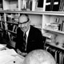

ABOUT US
HISTORY OF THE LAB
Established in 1953 by Arthur H. Robinson, the Cartography Lab has created virtually every kind and size of map, for a wide variety of academic, commercial, and individual customers.
Robinson demonstrated an aptitude for cartography and began drawing maps for faculty textbooks while earning a master's degree in geography from the University of Wisconsin-Madison and a doctorate from Ohio State.
Recruited for the Office of Strategic Services in 1941, Robinson headed its map division throughout World War II, overseeing the drawing of about 5,000 maps for the military. At war's end, he joined the University of Wisconsin-Madison faculty, where he taught at Science Hall until his retirement in 1980.
Arthur H. Robinson is perhaps best known to the public as the creator of the Robinson Projection, a map projection that he referred to as "a portrait of the earth." In 1988 the National Geographic Society adopted that projection as its standard for producing world maps, followed by agencies of the U.S. Government and others worldwide.